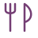
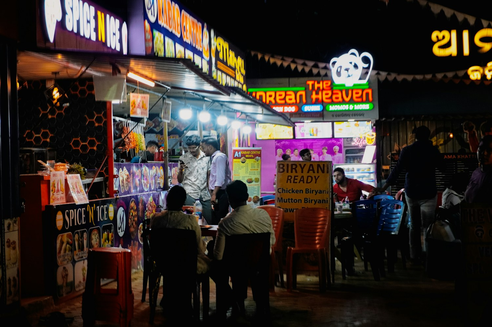
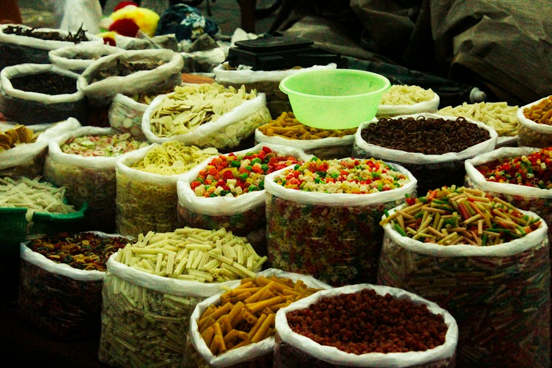
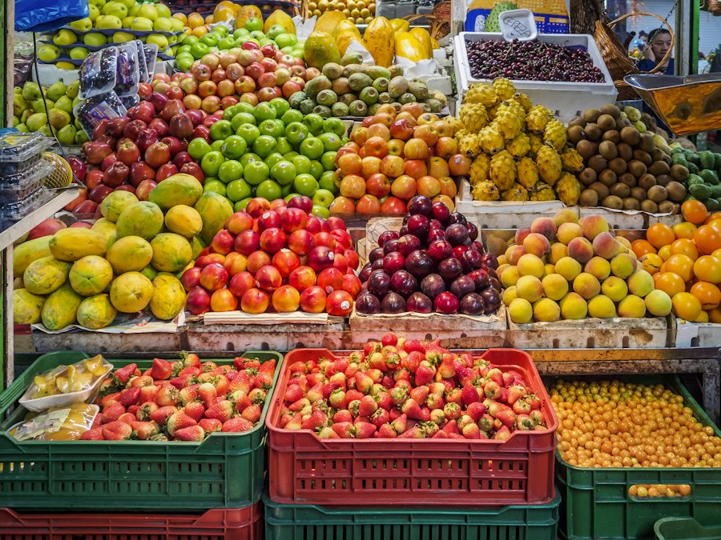
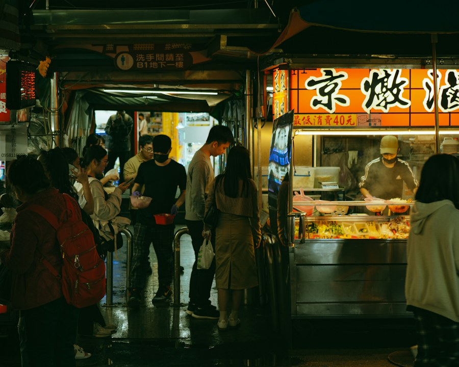
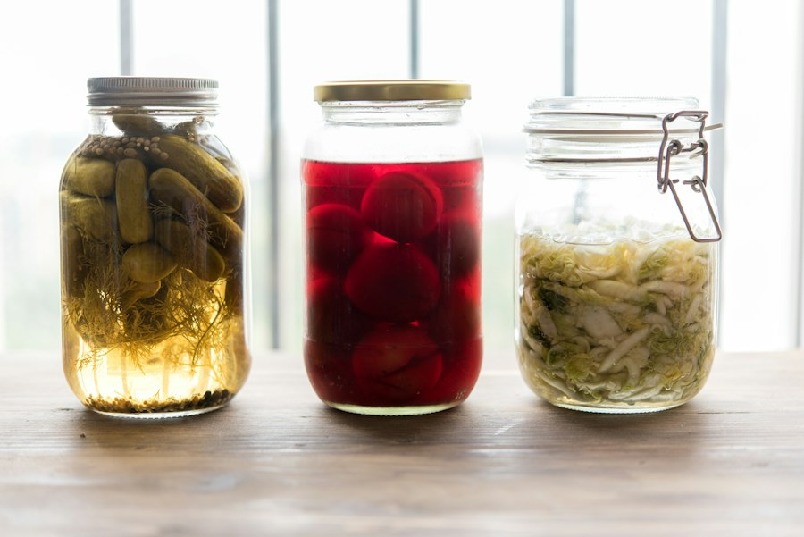
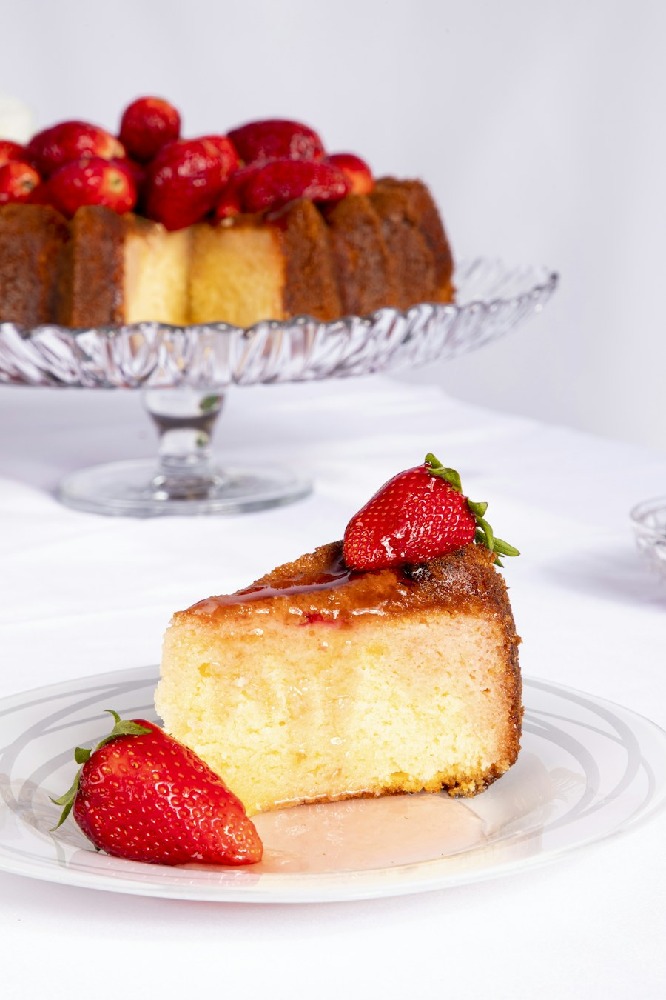
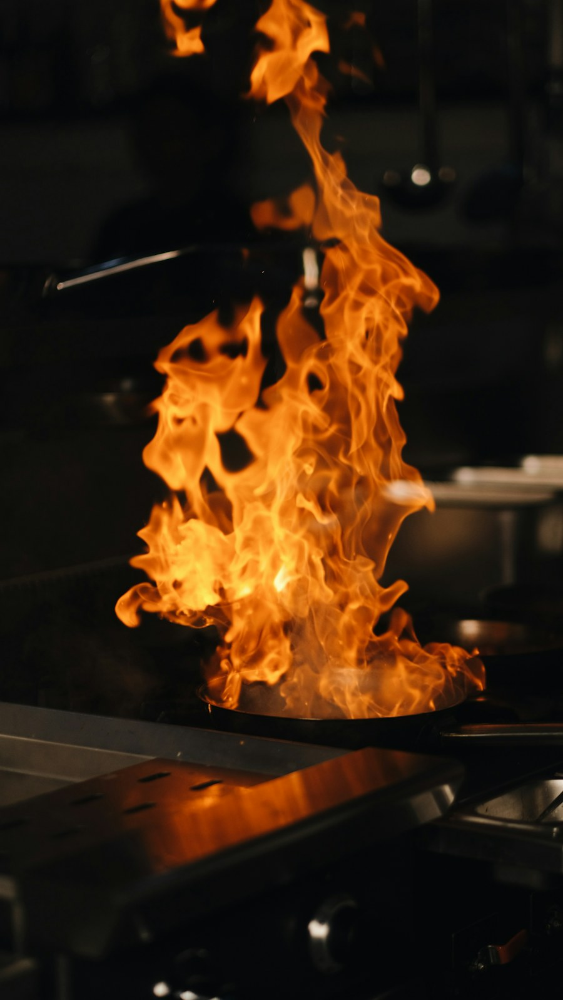
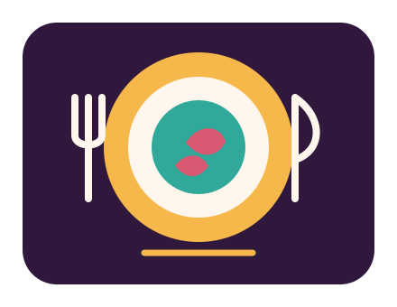

Restaurantes con carácter
Mesas para probar una cocina distinta y dejar que el menú te sorprenda.
Una guía para comer con curiosidad
Descubre mesas inesperadas, mercados vibrantes y sabores que convierten cualquier salida en un pequeño viaje.

Sigue el antojo
Una buena ruta puede empezar en una mesa, una plaza o una cocina nueva.

Mesas para probar una cocina distinta y dejar que el menú te sorprenda.
Colores, ingredientes y puestos que invitan a recorrer sin prisa.
Bocados espontáneos para conocer el pulso de cada rincón.
Manos a la masa: aprende una técnica y llévate una historia.
Prueba combinaciones nuevas y encuentra matices que no esperabas.
Conoce productos nuevos y maneras distintas de llevarlos a tu mesa.
Ideas para tu próxima salida
Rutas temáticas para inspirarte. Son ideas editoriales, no fichas de establecimientos verificados.

Restaurante · Especias
Una salida para quienes disfrutan aromas intensos, salsas para compartir y platos llenos de color.
Plan: pedir al centro y probar de todo un poco.

Mercado · Frutas
Recorre puestos, pregunta por ingredientes desconocidos y elige algo que nunca hayas probado.
Plan: dejar que la curiosidad marque el camino.

Calle · Bocados
Arma una cena a pequeñas mordidas: algo crujiente, algo fresco y un toque picante.
Plan: caminar, mirar y elegir sin apuro.

Restaurante · Fermentos
Una ruta para descubrir sabores ácidos, encurtidos y contrastes inesperados.
Plan: buscar un menú con opciones para compartir.

Café · Dulces
Un final dulce con frutas, masas suaves y una bebida para alargar la conversación.
Plan: pedir varios postres para probar juntos.

Experiencia · Fuego
Una idea de plan para compartir platos calientes y observar cómo se prepara la comida.
Plan: elegir una mesa donde cocinar sea parte del paseo.
Curiosidad servida
Mundo Umami es una invitación a explorar la comida con todos los sentidos. Aquí encontrarás ideas para elegir una mesa diferente, pasear por un mercado o probar un ingrediente nuevo.
Las rutas de esta página son inspiración: confirma directamente con cada establecimiento sus horarios, menú, disponibilidad y condiciones antes de visitarlo.

El ingrediente secreto
La curiosidad: pregunta, comparte y prueba a tu ritmo.
Antes de salir
Comparte el dato
Cuéntanos qué tipo de experiencia te gustaría encontrar en esta guía.
Una nota sobre esta demo
El formulario no envía información a un servidor ni guarda tus respuestas.